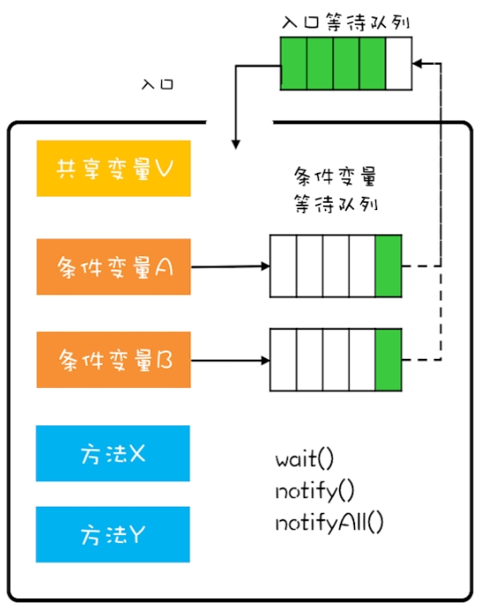
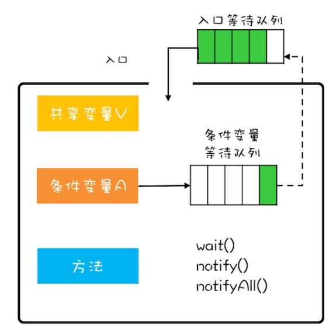

8管程
管程
解决并发问题的核心技术：管程
管程：管理共享变量以及线程对共享变量的操作过程，让他们支持并发
翻译为Java领域的语言:管理类的变量和方法，让类线程安全
Java在1.5之前，提供的唯一的并发原语就是管程（Java采用的是管程技术synchronized关键字及wait、notify、notifyAll三个方法都是管程的组成部分）
管程(Monitor)和信号量等价，等价指管程、实现信号量可相互实现
(操作系统原理课程告诉我，信号量能解决所有并发问题)
并发编程领域两大核心问题：
- 互斥，同一时刻只允许一个线程访问共享资源
- 同步，线程之间如何通信、协作
三种管程模型
Hasen模型、Hoare模型、MESA模型
核心区别：当条件满足后，如何通知相关线程。管程要求同一时刻只允许一个线程执行，那当线程T2的操作使线程T1等待的条件满足时，T1和T2 究竟谁可以执行呢？
- Hasen 模型
要求 notify() 放在代码的最后，这样 T2 通知完 T1 后，T2 就结束了，然后 T1 再执行，这样就能保证同一时刻只有一个线程执行。 - Hoare 模型
T2 通知完 T1 后，T2 阻塞，T1 马上执行；等 T1 执行完，再唤醒 T2，也能保证同一时刻只有一个线程执行。但是相比 Hasen 模型，T2 多了一次阻塞唤醒操作。 - MESA 模型
T2通知完T1后，T2继续执行，T1从条件变量等待队列进到入口等待队列并不立即执行。好处是notify不用放到代码的最后，T2也没有多余的阻塞唤醒操作。副作用是当T1再次执行时，曾经满足的条件，现在可能已不满足，所以需要以循环方式检验条件变量。
MESA 模型
解决互斥问题
将共享变量及其对共享变量的操作统一封装起来
只能通过调用管程提供的 enq()、deq()方法访问共享变量queue，enq()、deq()互斥，只允许一个线程进入管程
解决同步
条件变量和等待队列解决线程同步问题
多个线程同时试图进入管程时，只允许一个进入，其他则在入口等待队列等待
管程里的条件变量都对应有一个等待队列

1 | public class BlockedQueue<T>{ |
await和wait语义一样,signal和notify语义一样
wait需要在一个while循环里面调用，这个是MESA管程特有的。
notify何时可以使用
满足以下三个条件：
- 所有等待线程拥有相同的等待条件；在同一个条件下等待。
- 所有等待线程被唤醒后，执行相同的操作；
- 只需要唤醒一个线程。
总结
Java内置的管程方案是对MESA模型进行了精简。
synchronized关键字修饰的代码块，编译期自动生成加锁和解锁的代码，仅支持一个条件变量；而Java SDK并发包实现的管程支持多个条件变量，不过并发包里的锁，需要开发人员自己进行加锁和解锁操作。
